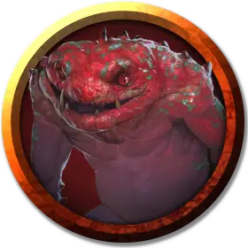

Носитель драковируса
Dracophage Subject
Средний Монстр, законно-злой

Класс Доспеха 15 (природный доспех)
Хиты 39 (6к8 + 12)
Скорость 40 футов, лазая 40 футов
| мод | спас | ||
|---|---|---|---|
| СИЛ | 11 | +0 | +0 |
| ЛОВ | 17 | +3 | +5 |
| ТЕЛ | 14 | +2 | +2 |
| мод | спас | ||
|---|---|---|---|
| ИНТ | 12 | +1 | +1 |
| МДР | 13 | +1 | +1 |
| ХАР | 11 | +0 | +0 |
Навыки Восприятие +3, Обман +4, Скрытность +7
Иммунитет к урону яд
Иммунитет к состояниям отравление
Чувства тёмное зрение 60 футов, пассивное Восприятие 13
Языки Общий, Драконий
Опасность 3 (700 опыта)
Бонус мастерства +2
Особенности
Предсмертная агония. Когда хиты носителя опускаются до 0, он распадается на кислоту, обрызгивая всех вокруг себя. Все существа в пределах 5 футов должны преуспеть в спасброске Ловкости Сл 12 или становятся покрытыми кислотой на 1 минуту. Существо покрытое кислотой получает 7 (2к6) урона кислотой в начале каждого своего хода. Действием существо может соскрести или смыть кислоту с себя или другого существа.
Планирование. Когда носитель падает и дееспособен, он вычитает до 100 футов от высоты падения при расчете урона от падения, и может переместиться до 2 футов по горизонтали за каждый 1 фут спуска.
Действия
Коготь. . Рукопашная атака оружием: +5 к попаданию, досягаемость 5 футов, одна цель. Попадание: 5 (1к4 + 3) колющего урона плюс 7 (2к6) урона ядом. Если цель — гуманоид, она должна преуспеть в спасброске Телосложения Сл 12, иначе заразится болезнью — крошечным яйцом слаада.
В гуманоиде одновременно может находиться только одно яйцо. Через три месяца яйцо перемещается в грудную клетку, созревает и формирует головастика слаада. За 24 часа до появления головастика на свет носитель начинает чувствовать себя нехорошо, его скорость уменьшается вдвое, и он совершает с помехой броски атаки, проверки характеристик и спасброски. При рождении головастик проедает свой путь через внутренние органы и выходит из грудной клетки носителя за 1 раунд, тем самым убивая его.
Если болезнь вылечить до рождения головастика, слаад рассосётся внутри носителя.
Описание
Дракониды капака создаются с использованием яиц медных драконов. Этим хитрым противникам нравится наносить удары по врагам, которые отвлечены или ничего не подозревают. Капак часто покрывают свое оружие паралитической слюной, что также делает их грозными убийцами. Их маленькие крылья не позволяют капак летать, но они помогают драконидам превратить падение в грубое скольжение. Когда они умирают, капак растворяются в кислоте, которая может выплеснуться на близлежащих существ.
Дракониды
Дракониды - двуногие монстры, рожденные из яиц металлических драконов, которые были испорчены сочетанием извращенной алхимии и грязной магии Королевы Драконов. Армии драконов тщательно охраняют секрет создания драконидов, позволяя металлическим драконам Кринна продолжать думать, что их яйца находятся в заложниках, чтобы они не противостояли завоеваниям Королевы Драконов.